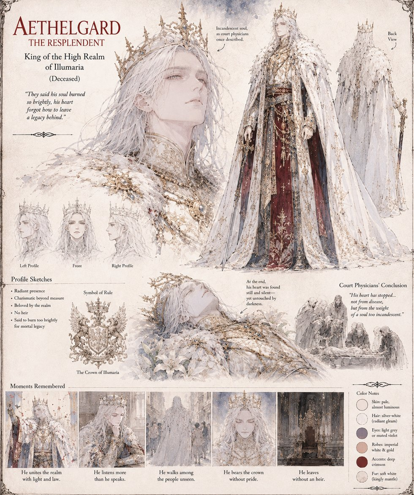

Aethelgard
King of the High Realm of Illumaria · Deceased
King Aethelgard the Resplendent rules Illumaria as the Decree of Luminescence's own proof of concept: radiant, beloved, and, court chroniclers agreed, so charismatic that his own heart was said to burn too brightly for anything as mundane as a legacy. He dies without an heir in three attempted marriages, a fact the court physicians attribute to a stopped heart and the Last Order attributes, with rather more theological confidence, to a soul too incandescent for any womb to house its successor.
His death is the vacancy the entire book fills: it sends High Pontiff Sarel looking for the next man or woman who can be proven, publicly, to glow, and puts Ignis, Astraea, and Cassian — and, far down a guest-roll ranked by wealth, Duke Blakk of Mud-Reach — into the same Basilica on the same morning.
“They said his soul burned so brightly, his heart forgot how to leave a legacy behind.”
Appears in The Vessel of Unmediated Grace